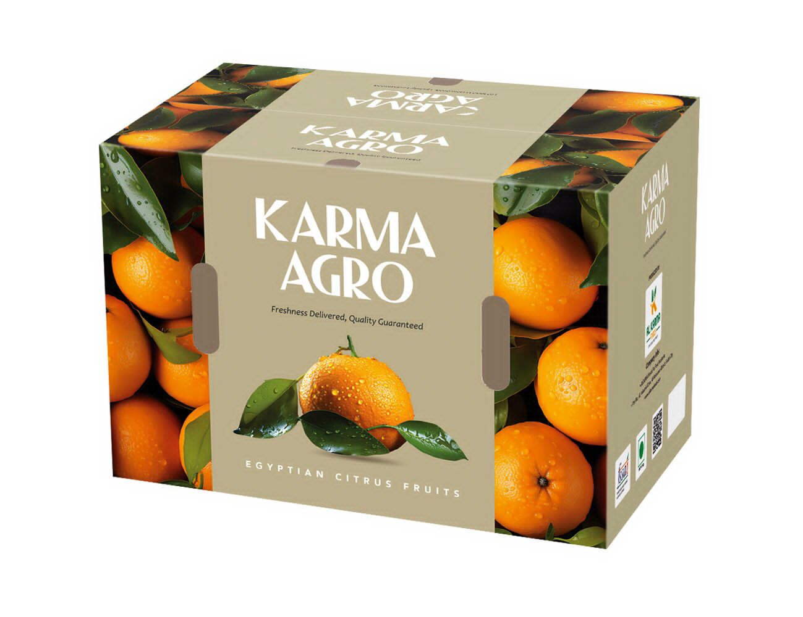
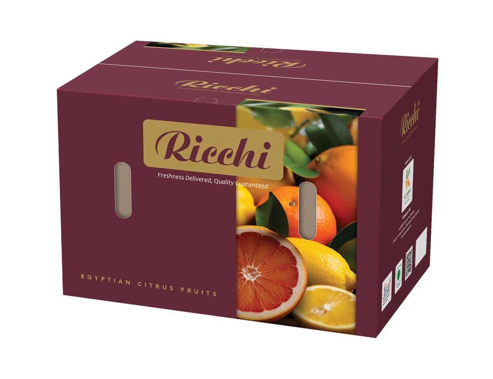
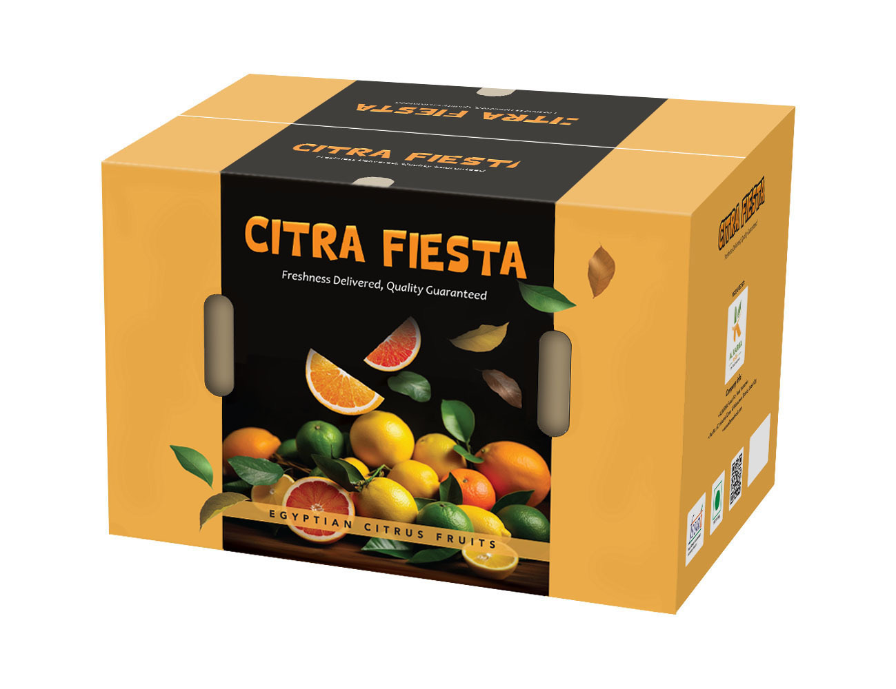
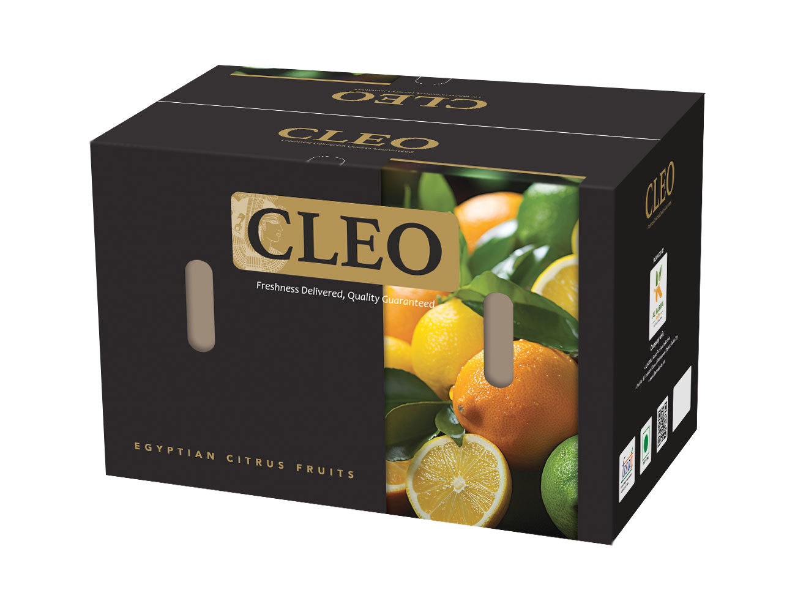
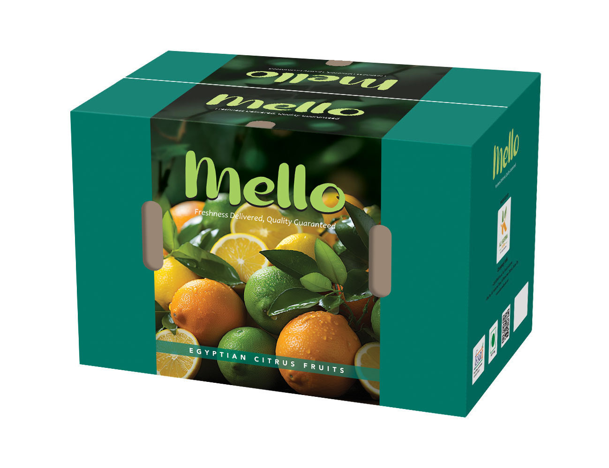

Egyptian Fresh Produce Exporter
Freshness Delivered.
Quality Guaranteed.
Al Karma Foods grows, packs and exports premium Egyptian citrus under five distinct brands — Karma Agro, Ricchi, Citra Fiesta, Cleo and Mello — built for retailers and importers who need consistent quality, on time, every season.
House Brand
Karma Agro
Freshness Delivered, Quality Guaranteed
Our flagship label — a full range of Egyptian citrus grown, sorted and packed to consistent export-grade specification. Karma Agro is the reliable everyday choice for importers who buy on volume and value repeat-season consistency over everything else.
- Oranges, mandarins & lemons, sized and graded to spec
- Field-to-pack cold chain for maximum shelf life
- Flexible carton formats for retail and wholesale programs


Premium Selection
Ricchi
Freshness Delivered, Quality Guaranteed
Ricchi is our premium tier — hand-selected oranges, blood oranges and lemons for customers who sell on presentation as much as flavor. Deeper color, tighter sizing tolerance, and packaging built to stand out on a premium shelf.
- Blood orange, navel & lemon lines for premium retail
- Tighter grading tolerance for uniform shelf presentation
- Positioned for specialty and premium grocery channels
Mixed Citrus, Retail Ready
Citra Fiesta
Freshness Delivered, Quality Guaranteed
A bold, high-visibility brand built for mixed-citrus programs — oranges, lemons and limes together in one carton. Citra Fiesta is designed to move fast on promotional and multi-buy displays.
- Mixed citrus assortments for promotional programs
- High-impact carton design built for shelf standout
- Ideal for multi-buy and seasonal retail campaigns


Heritage & Prestige
Cleo
Freshness Delivered, Quality Guaranteed
Cleo carries the story of Egypt itself — a black-and-gold identity for customers who want a premium, heritage-driven brand on the shelf. Built for markets where provenance and presentation close the sale.
- Lemons, oranges & mandarins under a heritage identity
- Premium black & gold carton for gifting and specialty retail
- Built for markets that pay for provenance and story
Everyday Fresh
Mello
Freshness Delivered, Quality Guaranteed
Mello is our approachable, everyday citrus brand — friendly branding, honest quality, and pricing built for high-rotation retail. The line customers reach for week after week.
- Everyday lemons, limes & oranges at accessible price points
- Consistent quality built for weekly retail rotation
- Friendly, high-visibility branding for family shoppers

Export Sales
Let's talk about your next container.
Whether it's a trial shipment or a standing seasonal program, our export sales team can put together a spec sheet, pricing and availability calendar for any of our five brands.